Substrate System Operating Principles
Purpose
This document details the operating principles for the substrate system.
Module Function
- Loading substrate onto the instrument.
- Properly warming delivered substrate.
- Dispensing a precise and accurate volume of substrate into the reaction vessels.
- Manually removing depleted substrate bottles.
Substrate Module Location
All substrate module components are located behind the main upper right cover.
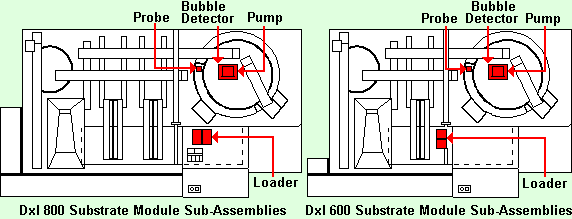
Substrate Module Components
- Substrate pump-valve assembly.
- Substrate bubble detector.
- Substrate probe.
- Substrate loader assembly.
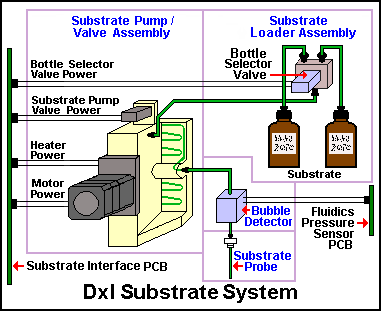
Substrate Module Operational Overview
- The operator opens the substrate load door, places a new bottle of substrate into the load tray, and pushes the tray in.
- The substrate load door closes automatically.
- The operator scans the substrate bottle bar code label with the AU bar code reader or the operator types in the bar code label information.
- The operator enters the test requests into the system and loads the samples.
- The tests are started.
- The temperature of the substrate in the DxI substrate heater is controlled to a range of 36.9 to 37.9 °C.
Note: This range is higher than it is in Access instruments.
- An RV enters the substrate dispense position.
- The substrate pump draws substrate from the supply bottle, the substrate valve moves to the probe position, and the pump dispenses 200 µL of substrate into the RV.
- The substrate pump performs a back draw to pull substrate that has not been dispensed into the controlled environment of the heater.
- As processing continues, the reaction of the substrate with the sample and reagents is read by the luminometer.
Substrate Pump Operational Overview
- The rotation of the motor is converted to a linear piston motion by a timing belt.
- Substrate is dispensed (into an RV) every nine seconds (the time of one wash / read carousel sub-pitch).
- The substrate valve is rotated to the substrate supply position.
- The substrate pump moves downward and draws substrate into the body.
- The substrate valve is rotated to the substrate probe position.
- The substrate pump moves upward, forcing substrate out of the pump body, through the valve, heater, and probe delivering 200 µL of substrate into an RV.
- The pump moves downward to pull substrate that has not been dispensed into the controlled environment of the heater.
Bubble Detector Operational Overview
A red LED illuminates the reference photodiode directly and a detector photodiode through the substrate tubing. The LED light intensity and the lensing effect of the substrate in the substrate tubing determines the detector photodiode output voltage.
This diagram provides a simplified view of how the bubble detector light beam is either diffused or concentrated when passing through the substrate tubing.
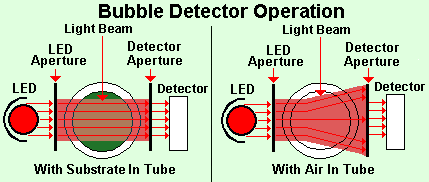
LED Aging:
The LED light intensity and the threshold adjustment (a potentiometer) determine reference photodiode output. The threshold is determined from the reference photodiode rather than directly, so that it tracks the light intensity of the LED in the same proportion as the detector photodiode. This is because the LED ages with time.
Adjustment:
The ideal setting for the reference photodiode output (threshold adjustment) is 1.4 times the detector photodiode voltage output, with air in the tubing. With substrate in the tubing, the light intensity approximately doubles, so 1.4 times the detector voltage with air is an equal proportion between detector voltage with air and with substrate, which maximizes the noise immunity. This adjustment is performed in instrument manufacturing, but Field Service can perform the adjustment when necessary.
This diagram provides a simplified view of the operation of the Substrate Bubble Detector circuitry.
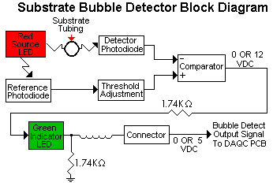
- As the LED ages, less LED light enters the reference photodiode causing the voltage on the comparator (+) input to decrease.
- The light collection efficiency of the detector is defined by an aperture placed in front of it and by the active area of the detector.
- The bubble detect output signal (comparator output) is 0 V DC nominal with substrate in the tubing, and +12 V DC nominal with air.
- The comparator output is either high or low.
- The typical detector output voltage difference between air and substrate is at least 250 mV.
This table lists the conditions in the circuitry with and without substrate present.
| Signal | With Substrate | With Air |
|---|---|---|
| Detector Input | Receives a more concentrated light beam. | Receives a diffused light beam. |
| Detector Output | Is a more positive DC voltage. | Is a less positive DC Voltage. |
| Comparator Input | Receives a more positive voltage on the (-) input. | Receives a less positive voltage on the (-) input. |
| Comparator output | Is nearly 0 V DC. | Is 12 V DC. |
| The Indicator LED | Is unlit. | Is lit. |
Substrate Loader Assembly Operational Overview
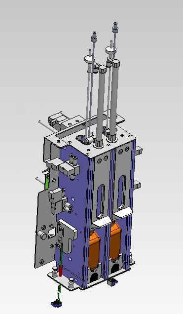
- Two new type of sensor brackets (Left and Right brackets) are replacing the mechanical sensor brackets.
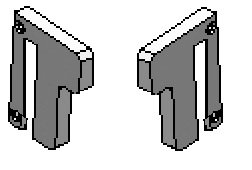
- The brackets are mounted to both left and right sides of the loader at a higher height compare to the old sensor brackets.
- They are for mounting the optical sensors.
- The brackets cannot be mounted interchangeably.
- Two new optical sensors are replacing the mechanical sensors with actuator arms.
Optical Sensor Back and Front View
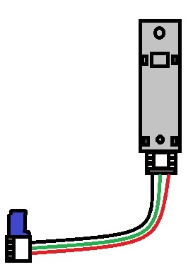
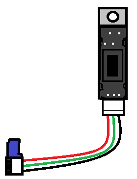
- The sensors are reflective style sensors.
- They have separate power connectors or electrical wire harnesses for connecting to the Substrate Interface PCB.
- The sensors are mounted into the brackets for detecting the shoulder of the substrate bottles.
- A new guide wall replacing the three guide walls within the substrate assembly.
- Two new drawers/trays with shorter back blocks replacing the old stye drawer/trays.
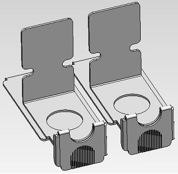
- The pneumatic actuating valve assemblies are repositioned to accommodate the new sensors and brackets.
- The pneumatic tubing lengths are updated to accommodate the new positions of the pneumatic valves.
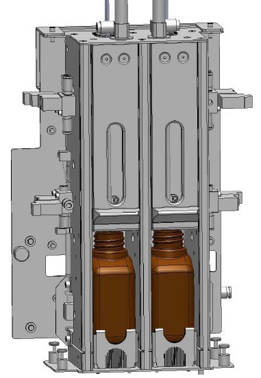
Operation
The substrate system allows the operator to change the substrate supply while the system is processing samples, by using two supply containers connected with a three-way selector valve.
- As the instrument runs and tests are completed, the substrate system draws out of only one container.
- When that container becomes empty, as determined by test count, the selector valve switches to the other container.
- The pump draws out fresh substrate past the selector valve, the valve switches to the empty container, and the pump dispenses the substrate into the empty container.
Note: The purpose of the draw and dispense into the empty bottle is to remove substrate contained in the tubing between the end of the bottle supply probe and the valve. The age and condition of that substrate is unknown.
- The valve then returns to the new container and the system resumes operation.
Note: The container switch occurs within the regular nine-second pitch.
Substrate Bottle Replacement Overview
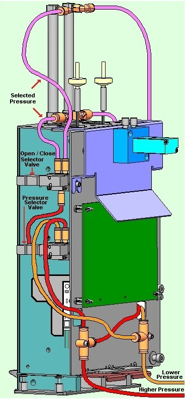
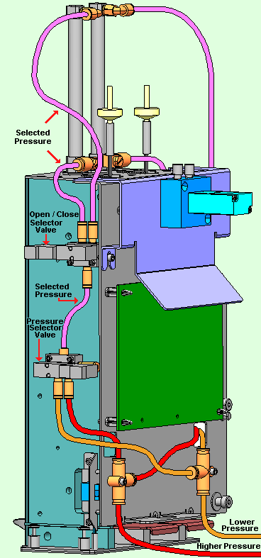
| Step | Action | Bottle Detect LED / Sensor | Door Down LED / Sensor | Door Up LED / Sensor | Selector Valve Pressure / LED | Door Air Cylinder LED / Cylinder |
|---|---|---|---|---|---|---|
| 1 | After software reports the substrate bottle is empty, the air pressure valve switches the load door down pressure from between 32 and 35 psi to 20 psi. | On / Open | On / Closed | Off / Open | 20 psi / Off | On /Down |
| 2 | The operator starts lifting the load door until the load door-probe down sensor is Open (approximately 1/4 inch). The air cylinder lifts the load door until the load door-probe open sensor Closes. The air pressure selector valve switches from 20 psi to between 32 and 35 psi. | On / Open | Off / Open | On / Closed | 20 psi/ On | Off / Up |
| 3 | The operator depresses and releases the bottle load tray and pulls the tray to the Out position. The bottle detect sensor Closes as the bottle moves outward. Software monitors the bottle detect sensor to prevent the load door-probe from being lowered. | Off / Closed | Off / Open | On / Closed | 35 psi / Off | Off / Up |
| 4 | The operator removes the empty bottle and replaces it with a new bottle. | N/A | N/A | N/A | N/A | N/A |
| 5 | The operator returns the bottle load tray to the In position by pushing the bottle load tray in.
New Substrate Loader
Old Substrate Loader
The air pressure selector valve switches pressure from between 32 and 35 psi to 20 psi. The air cylinder lowers the load door-probe until the load door-probe down sensor is Closed. |
On / Open | On / Open | Off / Open | 20 psi/ Off | On / Down |
| 6 | The air pressure selector valve switches from 20 psi to between 32 and 35 psi to prevent the load door from being raised. | On / Open | On / Open | Off / Open | 35 psi / On | On / Down |
| 7 | The operator scans the substrate bottle bar code label. | N/A | N/A | N/A | N/A | N/A |
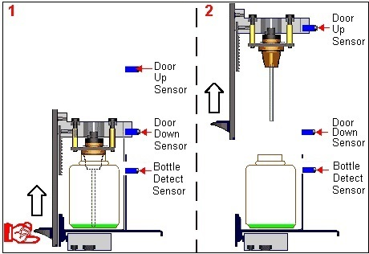
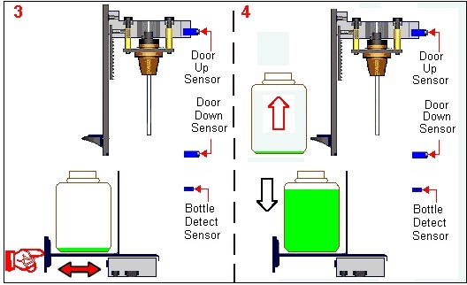
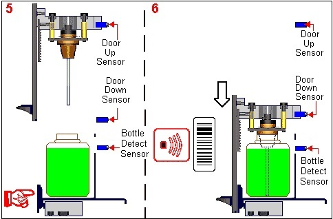
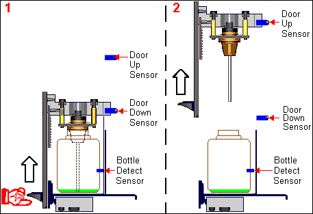
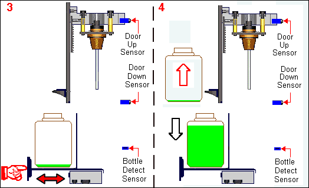
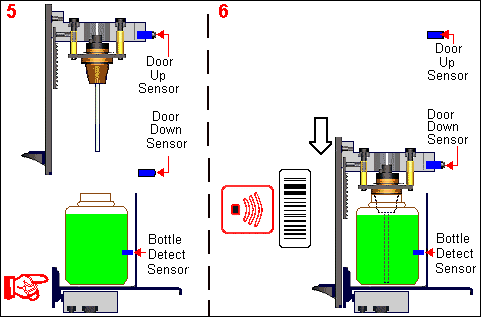
Component Locations and Functions - Substrate Pump
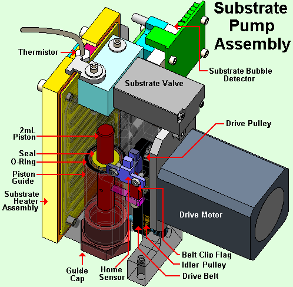
| Component | Description and Function |
|---|---|
| Belt, Drive | Transfers motion from drive motor to substrate pump piston. Belt is a timing belt. |
| Detector, Bubble | Detects presence or absence of substrate in tubing.
|
| Heater, Substrate | Resistance device in substrate pump that heats substrate near it to a temperature of 36.4 ±0.2 °C.
Note: The temperature of the substrate in the substrate heater is controlled at a temperature of 36.9 to 37.9 °C. This temperature is higher than the temperature in Access instruments.
|
| Insulation, Pump Assembly (not shown) | A thermal blanket that surrounds entire pump assembly.
|
| Motor, Drive | Provides power for moving the pump piston. |
| Valve, Substrate (Pump) |
Electromechanical device that switches between substrate supply line and substrate probe. Valve is attached to a manifold to make connections to necessary devices. |
Component Locations and Functions - Bubble Detector and Probe Assembly
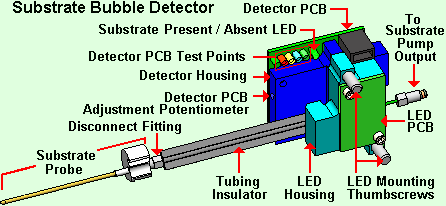
| Component | Function and Description |
|---|---|
| Housing, Detector and LED | Provides a means of mounting PCBs.
|
| Insulator, Tube
|
|
| PCB, Detector |
|
| PCB, LED |
|
| Probe, Substrate
|
Formed acrylic device used to place substrate into reaction vessels.
Note:
|
| Tubing, Upper Substrate
|
Routes tubing from substrate bubble detector to substrate probe. Includes tube insulator. |
Component Locations and Functions - Substrate Loader Assembly
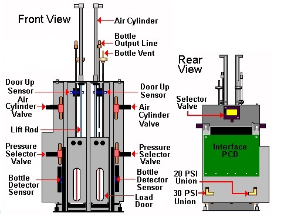
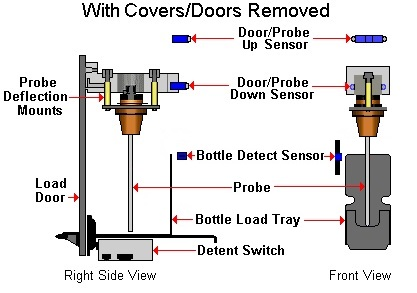
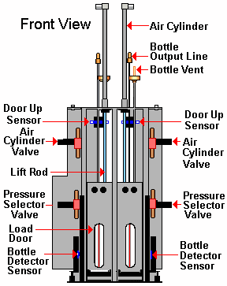
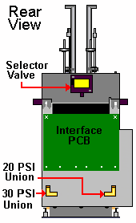
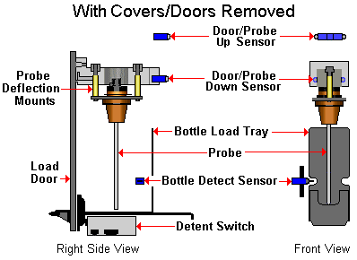
| Component | Function and Description |
|---|---|
| Cylinder, Air (two) | Air-operated device that lifts and lowers the load doors and probes. A needle valve located on the bottom of the cylinder controls the speed and force during the load door closing and opening. |
| Door, Load (two) | Allows access to the bottle load trays for replacing depleted substrate bottles. The door is slotted so that the substrate bottle bar code label can be scanned. |
| PCB, Interface (one) | Contains the input and output connections from this module to the instrument. |
| Probe, Supply (two) | Spring-loaded probe for each substrate bottle supply compartment that raises and lowers with the load door. When lowered into a bottle, the probe deflects upward when the notched end contacts the bottom of the bottle. |
| Sensor (six) | Sensors used for detecting:
|
| Tray, Bottle Load (two) | Operator-accessible tray that holds two substrate bottles and is held in position by the magnetic force of a mechanical detent switch. To release the tray for bottle loading and unloading, the operator presses and releases the front surface of the bottle load tray. When released, the tray must be pulled toward the front of the instrument manually. |
| Valve, Selector (one) | Electromechanical device used to switch from one substrate bottle to the other.
|
| Valve, Air Cylinder (four) |
A 24 V DC needle valve that switches between primary and secondary air pressure.
Air pressure operations of 32 to 35 psi:
Air pressure operations of 20 psi:
|
| Vent, Bottle (two) | Prevents substrate bottle from becoming a vacuum. |
Interacting Devices
- Analytical module
- Pneumatics
- Operator